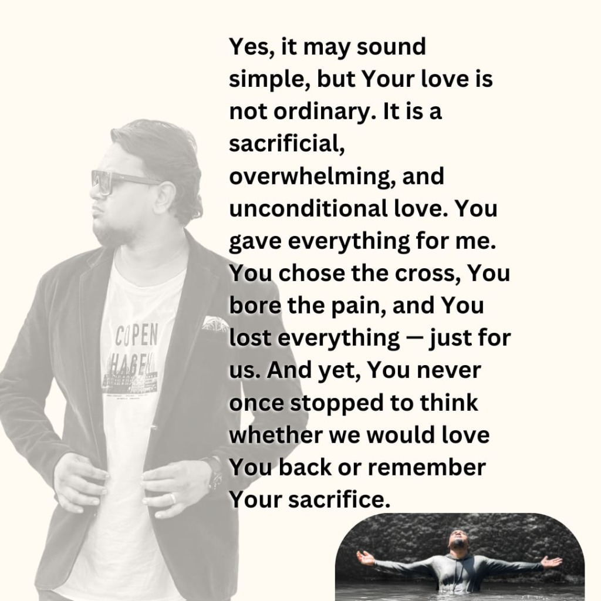
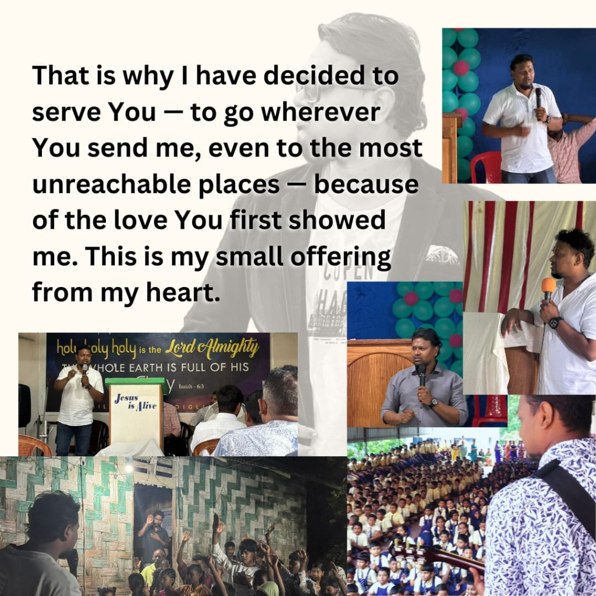
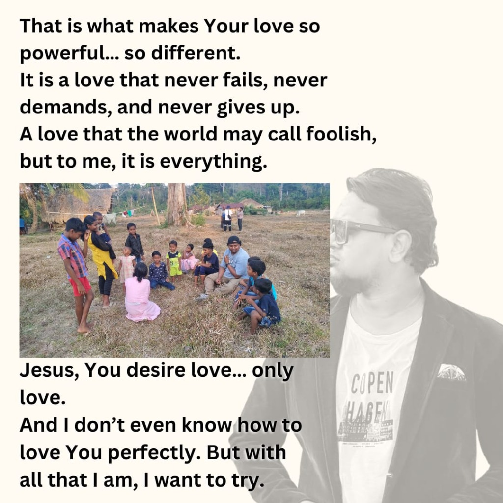

The visionary leadership serving the Chosen Tribe Worship Station
Lead Pastor & Visionary
Evangelist Prakash is a dedicated man of God with a burning passion to see the current generation revived, discipled, and launched into their spiritual callings.
Through the core ministry at the Worship Station, he leads deep discipleship programs, uncompromising teaching of the Word, and intense worship spaces.
"Called to raise disciples, not just believers. We go wherever He sends us, even to the most unreachable places."
He also oversees the Grace Media & Ministry Andaman branch, utilizing modern content creation and visual production to spread the Gospel across boundaries.
Personal reflections and testimony from Evangelist Prakash on devotion, sacrifice, and the call to serve.


